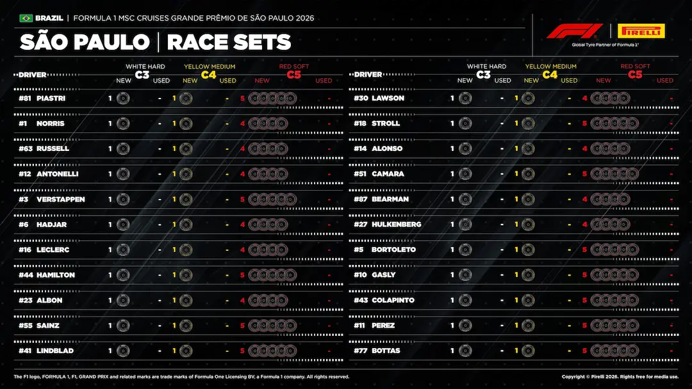
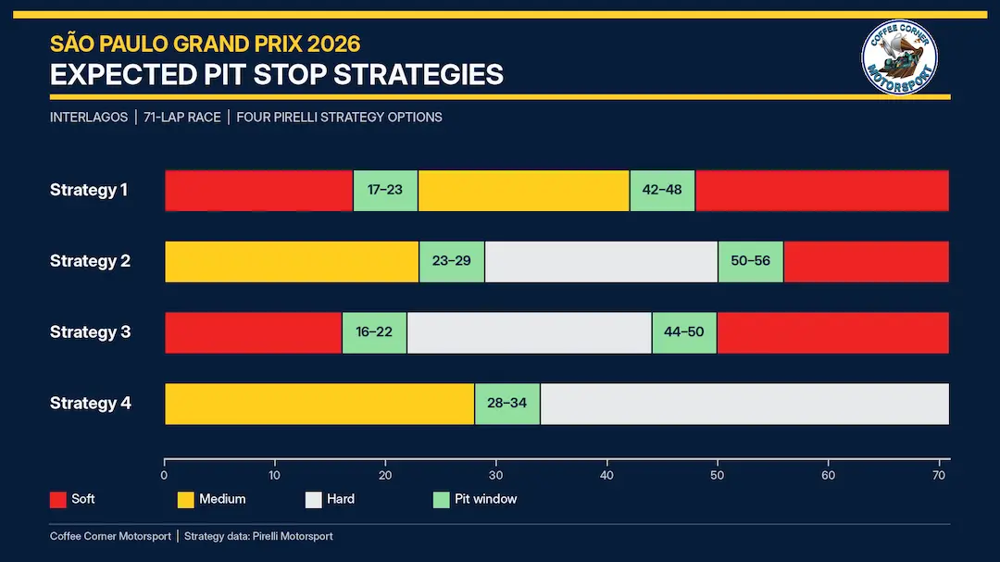

Tyres & Strategy
Compound allocation, degradation and the strategic shape of the race.
Race tyre availability
Source discovery notices — published chart available below
https://www.formula1.com/en/latest/article/strategy-guide-what-are-the-tactical-options-for-the-sao-paulo-gp.1VKxBiV7J8p5OfDdK0NShA: Published article is access-restricted; no login or protected API attempted
Pre-race tyre-set chart for São Paulo Grand Prix on 2026-11-08 — not tyres remaining after the finish. This published source is independent of optional FastF1 analysis.

Tyre sets available for the race (reviewed transcription)
| Driver | Team | Hard (C3) | Medium (C4) | Soft (C5) |
|---|---|---|---|---|
| Franco Colapinto COL | Alpine | 1 new1 left in total | 1 new1 left in total | 5 new5 left in total |
| Pierre Gasly GAS | Alpine | 1 new1 left in total | 1 new1 left in total | 5 new5 left in total |
| Fernando Alonso ALO | Aston Martin | 1 new1 left in total | 1 new1 left in total | 4 new4 left in total |
| Lance Stroll STR | Aston Martin | 1 new1 left in total | 1 new1 left in total | 5 new5 left in total |
| Gabriel Bortoleto BOR | Audi | 1 new1 left in total | 1 new1 left in total | 5 new5 left in total |
| Nico Hulkenberg HUL | Audi | 1 new1 left in total | 1 new1 left in total | 4 new4 left in total |
| Sergio Perez PER | Cadillac | 1 new1 left in total | 1 new1 left in total | 5 new5 left in total |
| Valtteri Bottas BOT | Cadillac | 1 new1 left in total | 1 new1 left in total | 5 new5 left in total |
| Charles Leclerc LEC | Ferrari | 1 new1 left in total | 1 new1 left in total | 4 new4 left in total |
| Lewis Hamilton HAM | Ferrari | 1 new1 left in total | 1 new1 left in total | 5 new5 left in total |
| Oliver Bearman BEA | Haas F1 Team | 1 new1 left in total | 1 new1 left in total | 4 new4 left in total |
| Rafael Câmara CAM | Haas F1 Team | 1 new1 left in total | 1 new1 left in total | 5 new5 left in total |
| Lando Norris NOR | McLaren | 1 new1 left in total | 1 new1 left in total | 4 new4 left in total |
| Oscar Piastri PIA | McLaren | 1 new1 left in total | 1 new1 left in total | 5 new5 left in total |
| George Russell RUS | Mercedes | 1 new1 left in total | 1 new1 left in total | 4 new4 left in total |
| Kimi Antonelli ANT | Mercedes | 1 new1 left in total | 1 new1 left in total | 4 new4 left in total |
| Arvid Lindblad LIN | Racing Bulls | 1 new1 left in total | 1 new1 left in total | 5 new5 left in total |
| Liam Lawson LAW | Racing Bulls | 1 new1 left in total | 1 new1 left in total | 4 new4 left in total |
| Isack Hadjar HAD | Red Bull Racing | 1 new1 left in total | 1 new1 left in total | 4 new4 left in total |
| Max Verstappen VER | Red Bull Racing | 1 new1 left in total | 1 new1 left in total | 5 new5 left in total |
| Alexander Albon ALB | Williams | 1 new1 left in total | 1 new1 left in total | 4 new4 left in total |
| Carlos Sainz SAI | Williams | 1 new1 left in total | 1 new1 left in total | 5 new5 left in total |
Source: Official 2026 São Paulo Grand Prix "Tyres Available for Race" allocation data. Source publication.
Table visually transcribed from the displayed chart; reviewed 2026-11-08T14:50:51Z. A changed source image disables this transcription until reviewed again.
Source discovery checked 2026-11-11T22:37:28+00:00.
FIA official tyre documents
Official source; curated transcription may await review. Linked PDFs are the authority. Discovery does not extract or verify numeric values, and does not replace the curated material below.
Last successful FIA document discovery: 2026-11-11T22:36:17.640058+00:00. This is retrieval time, not issue time; newer revisions may exist.
What this circuit does to a tyre
Anti-clockwise loading stresses the right-hand tyres and the neck. Sections between Turns 3–5 and Turns 8–9 were resurfaced in 2026. Pirelli rates track evolution 5/5; practice must establish degradation on the new surface.
Why it matters here
Very good. A long uphill straight into a downhill braking zone, plus several secondary opportunities. Interlagos reliably produces genuine racing.
Where passing is hard, strategy and the undercut decide the race; where it is easy, teams can afford to run longer and recover track position on merit.
Pirelli's event preview

FIA tyre prescriptions
C3 Hard / C4 Medium / C5 Soft. Mandatory race specifications: C3/C4; Q3 tyre: C5. These are nominations, not remaining race-set counts. The reviewed chart below is the pre-race remaining-set snapshot, taken after Qualifying; it is not a live post-race inventory.
| Type | Axle | Minimum start (psi) | Expected stabilized (psi) | Camber limit |
|---|---|---|---|---|
| Slick | Front | 27.0 | ≥28.0 | −3.00° |
| Slick | Rear | 26.5 | ≥27.5 | −1.75° |
| Intermediate | Front | 28.0 | ≥29.0 | −3.25° |
| Intermediate | Rear | 27.5 | ≥28.5 | −2.25° |
| Wet | Front | 26.5 | ≥29.0 | −3.25° |
| Wet | Rear | 25.5 | ≥28.5 | −2.25° |
Maximum heating: two hours, 70°C slick/intermediate and 40°C wet, measured at tread and sidewall rather than the blanket controller. Cold-pressure curves: front (T−70)×0.126+Pstart; rear (T−70)×0.125+Pstart. These figures are from FIA Competition Notes, Document 2, version 5 issue A; check the current event listing and screenshot gallery for revisions.
Pirelli's full poster estimates 22.5 seconds pit-stop loss. Traction, braking, stress, abrasion, grip and lateral demand are all 3/5; track evolution is 5/5. Resurfacing between Turns 3–5 and 8–9 makes Friday's long runs important. Last year's effective two-stop race is historical context, not the source for 2026 strategy windows.
Race strategy in the wet-dry-wet race
Formula1.com's race report describes a wet-dry-wet 71-lap Grand Prix. Hamilton was first to switch to Softs at the end of Lap 14; Norris, Russell and Hadjar stopped at the end of Lap 16, followed by Antonelli and Verstappen on Lap 17. Norris made another stop on Lap 49. When rain returned, Russell and Alonso were first to switch to Intermediates at Lap 61, then the field followed. FIA Document 81 records the final classification after 71 laps and 305.879 km, matching the current Formula1.com result table. Formula1.com race report and pit-stop chronology · FIA event listing · FIA Document 81, final classification · Formula1.com Race classification.
Pirelli's 8 November race report confirms that each driver who started used Intermediates and Softs. Norris's Soft stints lasted 33 and 13 laps; Russell and Leclerc each kept one Soft set for 45 laps before using a second set for the final ten. Pirelli's race graphic records 914 Soft laps (64%) and 521 Intermediate laps (36%); the longest Intermediate stint was 17 laps for Colapinto, Gasly, Antonelli, Verstappen and Alonso. The separate pit-stop graphic records 58 stops. Pirelli attributes the varied choices to changing weather: track temperature reached only 16°C, with mainly thermal degradation and some graining on the drying surface; wear became the main factor to manage. These are observed race outcomes, separate from the pre-race projections below. Pirelli's official post-race report · Pirelli race tyre-use graphic · Pirelli pit-stop graphic.


Pre-race strategy forecast (for comparison)
Pirelli's 7 November report says Qualifying used Full Wets in Q1, then Intermediates from Q2 through Q3. This describes qualifying tyre use, not the drivers' remaining race sets; the report's Saturday graphic is a session summary. Pirelli's report put the race-day rain chance at 60% when published; that is a dated forecast, not a live weather reading. These dry-race projections did not describe the wet-dry-wet race. For a dry race, Pirelli revised its pre-weekend simulations using Friday FP2 as the only representative long-run data: its preferred route is two stops, with two stints on Soft and one on Medium. Pirelli estimates this about three seconds quicker than strategies using all three available slick compounds; a Hard stint with two Soft stints increases total time, while a one-stop is estimated around ten seconds slower than the best two-stop. It also says an undercut may be decisive, especially when switching to a softer compound. These are Pirelli estimates, not measured outcomes; the Pirelli report itself gives no lap windows. Coffee Corner Motorsport's separate chart, credited to Pirelli Motorsport, plots four scenarios; these are illustrative windows, not measured pit stops:
| Option | Compound route | Pit window (lap) |
|---|---|---|
| 1 · preferred dry route | Soft → Medium → Soft | 17–23; 42–48 |
| 2 | Medium → Hard → Soft | 23–29; 50–56 |
| 3 | Soft → Hard → Soft | 16–22; 44–50 |
| 4 · one-stop | Medium → Hard | 28–34 |

The separate pre-race remaining-set graphic is a Pirelli Motorsport chart reproduced by Coffee Corner Motorsport. It shows one new C3 Hard and one new C4 Medium for each of the 22 entrants; the ten drivers who reached Q3 have four new C5 Softs and the other twelve have five. Its used-slick columns are dashes, consistent with the article's post-qualifying inventory note and Pirelli's confirmation that Qualifying used only wet-weather tyres. This is the remaining race inventory before the Race, not a claim that slicks were unused in practice. The verified table is image-bound and lists all six new/used cells for every driver. Pirelli's post-qualifying assessment · Friday FP2 analysis · Coffee Corner Motorsport's full article and graphic · official Qualifying · official Starting Grid.